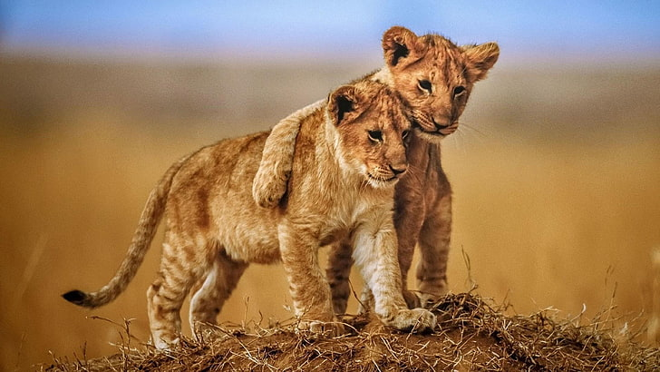
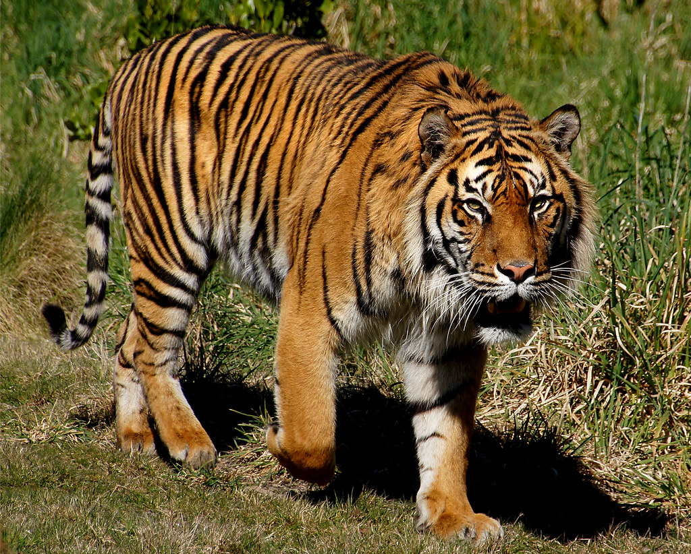

Komodo
Seperti yang diketahui, Komodo menjadi hewan yang sangat dilindungi di Indonesia. Dan hanya bisa ditemui di Pulau Komodo, Nusa Tenggara Timur. Yang saat ini jumlahnya makin meningkat. Di tahun 2021 saja, ada sebanyak 3.303 ekor. Hewan yang memiliki nama lain Varatus Komodoensis atau Orah yang tidak lain juga merupakan spesies reptil terbesar di dunia. Hewan purba ini hidup di TN Komodo hidup tersebar di lima pulau utama, yakni Pulau Komodo dengan luas 311,5 km2 sebanyak 1.728 ekor. Kemudian, di Pulau Rinca dengan luas 204,8 km2 sebanyak 1.385 ekor. Pulau Padar dengan luas 14,1 km2 memiliki 19 ekor. Pulau Gili Motang dengan luas 9,5 km2 memiliki 81 ekor. Pulau Nusa Kode dengan luas 7,8 km2 sebanyak 90 ekor. Tercatat dengan jumlah populasi pada tahun 2020, jumlah Komodo sebanyak 3.163 ekor, tahun 2019 tercatat 3.023 ekor, tahun 2018 tercatat 2.897 ekor, tahun 2017 tercatat 2.884 ekor, dan tahun 2016 sebanyak 2.430 ekor.



Harimau Sumatra (Panthera tigris sumatran)
Harimau Sumatera, keberadaannya cukup terkenal di seluruh dunia. Dengan jumlah populasi saat ini hanya tersisa 400 ekor saja. Nah, untuk mencegah kepunahannya, pemerintah telah menetapkan kawasan sebagai pusat konservasi Harimau Sumatera. Yakni, Taman Nasional Kerinci Seblat, Kawasan Ekosistem Ulu Masen dan Leuser di Aceh dan Sumatra Utara.

Badak Sumatera (Dicerorhinus sumatrensis)
Badan Sumatera menjadi hewan yang juga keberadaannya tidak bisa ditemukan di negara lain. Di Indonesia, Badak Sumatera menghuni kawasan TN Bukit Barisan, TN Gunung Leuser, dan TN Way Kambas kian terancam punah. Dengan jumlah kurang dari 80 ekor, penghuni hutan tropis yang hidup secara soliter ini hanya melahirkan satu anak setiap 3 atau 4 tahun sekali. Dan uniknya lagi, badak menjadi spesies badak terkecil dan satu-satunya badak bercula dua yang ada di Asia. Dan juga ada spesies lainnya, yakni badak Jawa atau Badak Sunda yang juga termasuk dalam kategori satwa langka di Indonesia.

Orang Utan (Pongo)
Di Indonesia, ada tiga spesies Orang Utan. Yakni Orang Utan Sumatera (Pongo Abelii), Orang Utan Kalimantan (Pongo pygmaeus), dan Orang Utan Tapanuli (Pongo tapanuliensis). Populasi Orang Utan Sumatera yang memiliki ciri khas warna bulu coklat kemerahan berada di posisi kritis punah. Sedangkan Orang Utan Kalimantan yang identik dengan bentuk wajah besar dengan pelipis seperti bantal ini populasinya juga terus menurun dan terancam punah. Untuk Orang Utan Tapanuli yang digolongkan sebagai “spesies baru” dan ditemukan di Ekosistem Batang Toru ini kondisinya paling memprihatinkan, karena menempati posisi sangat terancam punah.
Tarsius Kerdil (Tarsius pumilus)
Tarius kerdil atau yang juga disebut tarsius gunung. Hewan langka ini merupakan spesies hewan primata mungil yang berasal dari Sulawesi Tengah dengan bobot hanya berkisar 50 gram. Tarsius kerdil memiliki bulu yang sangat lembut dengan warna coklat keabuan atau cokelat kegelapan. Ternyata di awal tahun 2000-an, hewan cantik ini pernah dinyatakan punah karena tak lagi pernah terlihat. Beruntungnya, di tahun 2008 peneliti kembali menemukan empat ekor tarsius kerdil di Gunung Rorekatimbu, Sulawesi Tengah, dan sejak saat itu status punah atas hewan langka ini pun dihapus.

Gajah Kalimantan (Elephas maximus borneensis)
Gajah Kalimantan ukuran tubuhnya cukup kecil, dibandingkan gajah pada umumnya. Bayangkan saja, ukurannya seperlima lebih kecil dibandingkan spesies gajah India. Penampakan telinganya lebih besar dari kebanyakan gajah lainnya. Bentuk gading gajah Kalimantan lebih pendek dan lurus. Perilaku gajah Kalimantan tergolong lebih lembut dan tidak agresif. Umumnya hewan endemik asli Indonesia ini dapat ditemukan di dataran rendah di Kalimantan Timur.

Jalak Bali (Leucopsar rothschildi)
Fauna yang dimiliki Indonesia lainnya adalah Jalak Bali. Burung ini berwarna putih seluruh tubuhnya. Sementara di bagian ujung ekor dan sayap berwarna hitam. Jika ingin melihat keindahan burung ini, bisa datang ke kawasan Taman Nasional Bali Barat (TNBB). Jalak bali memiliki karakter yang periang, suka berkicau, dan tak jarang terlihat seolah menari di atas air. Uniknya lagi, burung jalak bali memiliki telur mungil berukuran 3 cm dengan warna hijau kebiruan.
Burung Maleo (Macrocephalon maleo)
Taman Nasional Lore Lindu menjadi habitat burung khas Sulawesi Tengah ini. Burung maleo merupakan satwa endemik yang tak akan bisa ditemui di tempat lain di dunia. Fauna asli Indonesia ini memiliki bulu warna hitam dengan bulu bagian bawah yang berwarna merah muda keputihan. Kulit di sekitar matanya berwarna kuning, paruhnya warna jingga keabuan dan memiliki tinggi sekitar 55 cm. Uniknya, burung maleo hanya bertelur sebutir dalam setiap musim, hal itu pula yang membuat keberadaan satwa ini kian mengalami kepunahan.
Monyet hitam Sulawesi (Macaca Nigra)
Monyet hitam Sulawesi adalah hewan endemik dari Sulawesi Utara yang juga punya nama lain yaki. Monyet ini dikenal dengan kepintarannya dan tubuh yang dipenuhi bulu serba hitam, lengkap dengan jambul kepala. Serta warna merah muda kemerahan di bagian bokongnya. Monyet hitam Sulawesi hidup di hutan tropis yang berada dalam kawasan Cagar Alam Tangkoko.

Burung Cenderawasih (Paradisaeidae)
Burung Cendrawasih, tentu sudah sangat familiar di telinga masyarakat Indonesia. Dengan keindahan bulunya menjadi keunikan burung ini. Secara etimologi, kata cenderawasih berasal dari kata Cendra yang berarti dewa-dewi bulan dan Wasih yang berarti utusan. Warga lokal menganggap burung ini adalah reinkarnasi peri yang terbang di sekitar hutan Papua. Ada sekitar 30 spesies cenderawasih di Indonesia dan 28 di antaranya bisa ditemukan di tanah Papua, beberapa di antaranya seperti cenderawasih kuning kecil, cenderawasih botak, cenderawasih raja, dan cenderawasih merah.